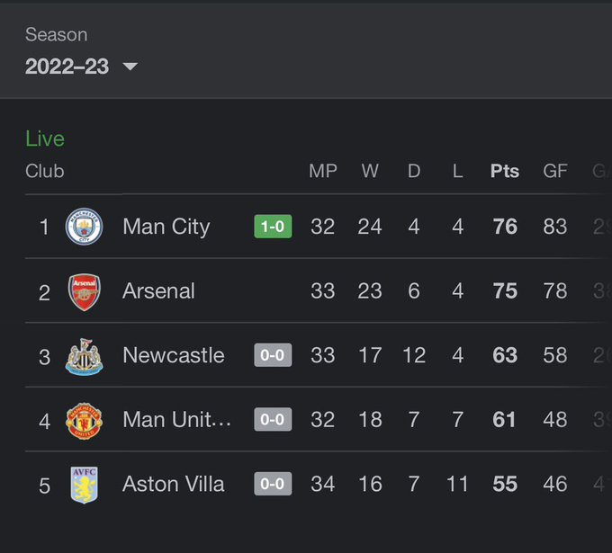

Home
For you
Following

Tweet
Show 245 Tweets
.jpg)
Elon Musk
@elonmusk · 18h
Home
.jpg)
3,067K
 300K
300K
 3.6M
6.9M
3.6M
6.9M
Naija
@Naija_PR · 3h
As a Nigerian, what's your next move?
748
190
2,178
219.7K
.jpg)
Cristiano Ronaldo
@Cristiano · 6h
Cheers to Loveüòò
7,705K
23.2K
305K
10.5M
.jpg)
Chelsea FC
@elonmusk · 18h
A fantastic achivement, @CesarAzpil
!üëè
321
1,746
20.5K
739.2K
1.9M
Alhaji Beardless Smallieüßë
@the_smallie · 11h
Hello Arsenal, is it still lonely at the top?ü§£

105
212
1,957
6.9M
726.4K
Trends for you
Sports · Trending  Brother Benard
233K Tweets
Brother Benard
233K Tweets
Trending
Ashewo
4,221 Tweets
Music · Trending
Chef Chi
5,021 Tweets
Sports · Trending
#Messi
1,807 Tweets
News · Trending
Yahoo
219K Tweets
Trending in Nigeria
Jemima
3,074 Tweets
Trending in Nigeria
Opay
100K Tweets
Entertainment · Trending
#BBNaija
5,080 Tweets
Politics · Trending
Wike
3,064 Tweets
Trending in Nigeria
YVONNE OUR MUMMY G.O
2,360 Tweets
Trending in Nigeria
NDLEA
14.6K Tweets
Trending
Airdrop
1.69M Tweets
Sports · Trending
Jota
43.5k Tweets
Who to follow
Joker
@BachelorJoker
Bólúwatifẹ́
@bragosi
.jpg)
LERRY
@_AsiwajuLerry